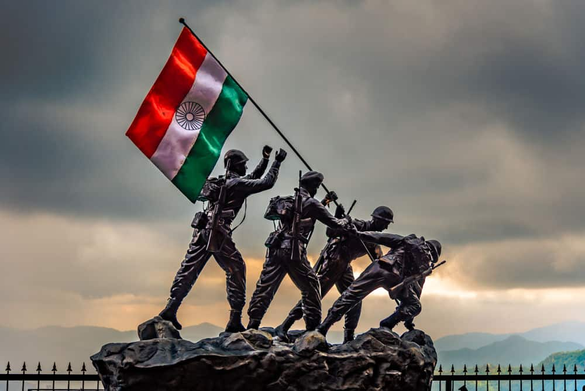

The History of India begins with the birth of the Indus Valley Civilization, more precisely known as Harappan Civilization. It flourished around 2,500 BC, in the western part of South Asia, what today is Pakistan and Western India
Founder of India
Portuguese explorer Vasco de Gama becomes the first European to reach India via the Atlantic Ocean when he arrives at Calicut on the Malabar Coast. Da Gama sailed from Lisbon, Portugal, in July 1497, rounded the Cape of Good Hope, and anchored at Malindi on the east coast of Africa
Top Empire's in India
British Indian Empire
Mughal Empire
Maurya Empire
Republic of India
Delhi Sultanate
Maratha Empire
Kushan Empire
Gupta Empire
Empire of Harsha
British Indian Empire
Formally, India was not a colony but a separate realm sharing a Monarch (the King-Emperor or Queen-Empress) with Britain. Thus, though ruled by a British Viceroy, "India" was a founding member of the League of Nations, a participating nation in the Summer Olympics in 1900, 1920, 1928, 1932, and 1936, and a founding member of the United Nations in San Francisco in 1945.[11] In both World Wars, Britain's declaring war on Germany did not automatically apply to India and a separate declaration of war by India was needed. The Indian Army was a completely distinct armed force – British-commanded but separate from the British Army and with its own chain of command. This system of governance was instituted on 28 June 1858, when, after the Indian Rebellion of 1857, the rule of the British East India Company was transferred to the Crown in the person of Queen Victoria[12] (who, in 1876, was proclaimed Empress of India). It lasted until 1947, when it was partitioned into two sovereign dominion states: the Dominion of India (later the Republic of India) and the Dominion of Pakistan (later the Islamic Republic of Pakistan, the eastern part of which, still later, became the People's Republic of Bangladesh in 1971). At the inception of the Raj in 1858, Lower Burma was already a part of British India; Upper Burma was added in 1886, and the resulting union, Burma (Myanmar), was administered as an autonomous province until 1937, when it became a separate British colony, gaining its own independence in 1948
THE INDEPENDENCE DAY
Day is celebrated annually on 15 August as a national holiday in India commemorating the nation's independence from the United Kingdom on 15 August 1947, the day when the provisions of the 1947 Indian Independence Act, which transferred legislative sovereignty to the Indian Constituent Assembly, came into effect. India retained King George VI as head of state until its transition to a full republic, when the nation adopted the Constitution of India on 26 January 1950 (celebrated as Indian Republic Day) and replaced the dominion prefix, Dominion of India, with the enactment of the sovereign law Constitution of India. India attained independence following the Independence Movement noted for largely non-violent resistance and civil disobedience.
CONSTITUTION OF INDIA
India, also known as Bharat, is a Union of States. It is a Sovereign Socialist Secular Democratic Republic with a parliamentary system of government. The Republic is governed in terms of the Constitution of India which was adopted by the Constituent Assembly on 26th November, 1949 and came into force on 26th January, 1950. The Constitution provides for a Parliamentary form of government which is federal in structure with certain unitary features. The constitutional head of the Executive of the Union is the President. As per Article 79 of the Constitution of India, the council of the Parliament of the Union consists of the President and two Houses known as the Council of States (Rajya Sabha) and the House of the People (Lok Sabha). Article 74(1) of the Constitution provides that there shall be a Council of Ministers with the Prime Minister.
INDIA TODAY
India is the largest democracy in the world, the 7th largest Country in the world, and one of the most ancient civilizations. The name 'India' is derived from the River Indus, the valleys around which were the home of the early settlers. The Aryan worshippers referred to the river Indus as the Sindhu. The Persian invaders converted it into Hindu. The name 'Hindustan' combines Sindhu and Hindu and thus refers to the land of the Hindus.
AGRICULTURE
India is the second largest producer of wheat and rice, the world's major food staples. India is currently the world's second largest producer of several dry fruits, agriculture-based textile raw materials, roots and tuber crops, pulses, farmed fish, eggs, coconut, sugarcane and numerous vegetables.Share of agriculture and allied sectors in gross value added (GVA) of India at current prices stood at 17.8 % in FY20. ... Principal agricultural commodities export for April 2020 - January 2021 was US$ 32.12 billion. Market Size. During 2019-20 crop year, food grain production reached a record of 296.65 million tonnes
TECHNOLOGY
Modern India has had a strong focus on science and technology, realising that it is a key element for economic growth. India is among the topmost countries in the world in the field of scientific research, positioned as one of the top five nations in the field for space exploration. Here is the list of the top 9 new and trending technologies:
Artificial Intelligence (AI) and Machine Learning
Robotic Process Automation (RPA)
Edge Computing
Quantum Computing
Virtual Reality and Augmented Reality
Blockchain
Internet of Things (IoT)
5G
Technology companies in India have driven growth, created jobs, increased access to resources, education and healthcare, resulting in falling poverty levels and improved lifestyles. India rises 4 places to 44th rank in world digital competitiveness rankings
INDIAN ARMY

The Indian Army is the land-based branch and the largest component of the Indian Armed Forces. The President of India is the Supreme Commander of the Indian Army, and its professional head is the Chief of Army Staff, who is a four-star general. Two officers have been conferred with the rank of field marshal, a five-star rank, which is a ceremonial position of great honour. The Indian Army originated from the armies of the East India Company, which eventually became the British Indian Army, and the armies of the princely states, which were merged into the national army after independence. The units and regiments of the Indian Army have diverse histories and have participated in a number of battles and campaigns around the world, earning many battle and theatre honours before and after Independence.[5]
ISRO
The Indian Space Research Organisation or ISRO is the national space agency of India, headquartered in Bengaluru. It operates under Department of Space which is directly overseen by the Prime Minister of India, while Chairman of ISRO acts as executive of DOS as well. The Indian National Committee for Space Research (INCOSPAR) was established by Jawaharlal Nehru under the Department of Atomic Energy (DAE) in 1962, on the urging of scientist Vikram Sarabhai recognising the need in space research. INCOSPAR grew and became ISRO in 1969, within DAE.[9] In 1972, the Government of India had set up a Space Commission and the Department of Space (DOS), bringing ISRO under the DOS. The establishment of ISRO thus institutionalised space research activities in India.[10][11] It since then has been managed by the DOS, which governs various other institutions in India in domain of astronomy and space technology
SPORTS IN INDIA
Sports in India refers to the large variety of games played in India, ranging from tribal games to more mainstream sports such as field hockey, kabaddi, cricket, badminton and football. India's diversity of culture, people, and tribes, as well as its colonial legacy, are reflected in the wide variety of sporting disciplines in the country.
Kabaddi is an ancient sport and the fastest growing sport of India. It can be said that Indian Kabaddi team is the strongest kabaddi team in the world and to defeat India is very hard for other countries teams. India won many matches and seasons of Kabaddi at the Asian Games and all three seasons of Kabaddi World Cup (Standard style). Cricket is the most popular sport in India, the country having hosted and won the Cricket World Cup on multiple occasions. Field hockey is the most successful sport for India at the Olympic Games; the Indian men's team has won eight Olympic gold medals. Kabaddi is the most popular indigenous sport in the country. Other popular sports in India are badminton, football, shooting, wrestling, boxing, tennis, squash, weightlifting, gymnastics, athletics, table tennis, basketball, volleyball and cycling. Popular indigenous sports include chess, kho-kho, kite-fighting, leg cricket, polo, snooker and gillidanda.
There is more about India to tell but I can’t tell each and everything I’m sharing all the knowledge which I knew
Thank you…